Fortalezas
- Identidad loretana y memoria jesuítico-guaraní.
- Portal San Antonio y sistema Iberá.
- Antecedentes técnicos y turísticos disponibles.
- Fauna emblemática y producción de naturaleza.
Proyecto preliminar de ordenamiento territorial: planificación ambiental, gobernanza y desarrollo local en el eje del Comité Iberá.
Objeto: diseñar un proyecto de ordenamiento territorial para Loreto como hoja de ruta técnico-política para un proceso futuro.
No se ejecuta el plan, ni las entrevistas, ni los talleres. Se define qué habría que hacer, con qué actores, con qué tiempos, con qué recursos y con qué factibilidad.
Una propuesta presentable ante municipio, Comité Iberá, UNNE y actores locales para iniciar una planificación territorial integral.
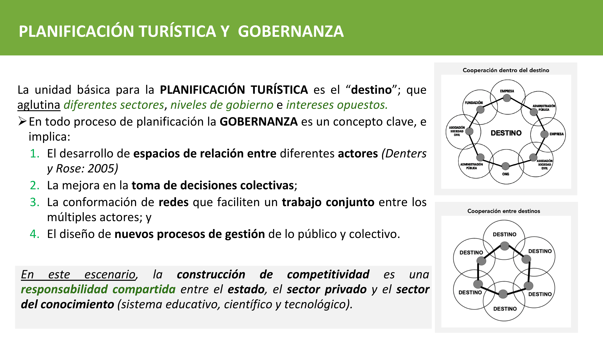
Loreto, Departamento San Miguel, Corrientes. Localidad asociada al sistema Iberá y al Portal San Antonio.
Pequeña escala urbana, fuerte identidad comunitaria, borde ambiental sensible y vínculo con un circuito ecoturístico provincial.
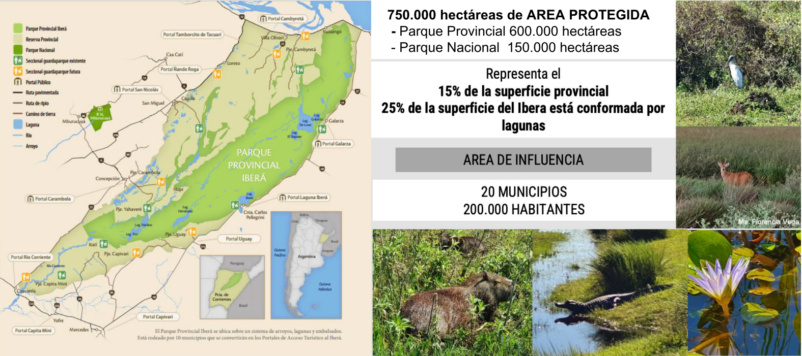
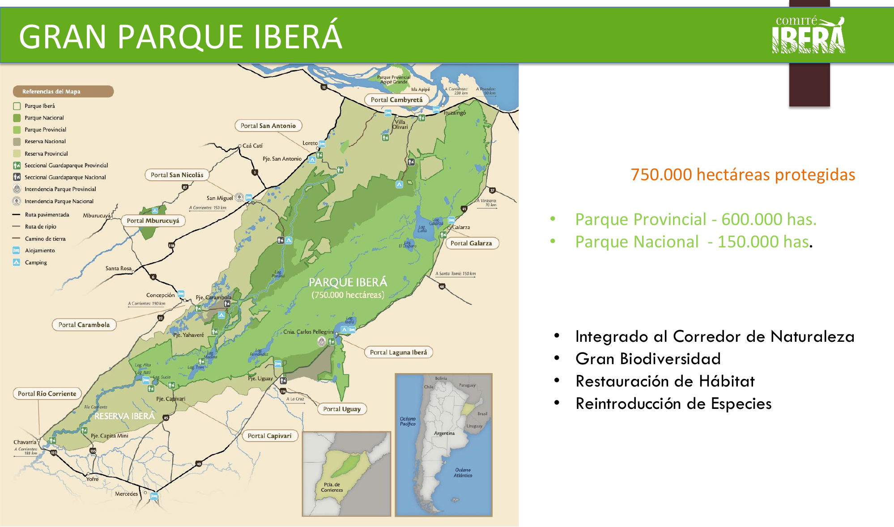
El Gran Parque Iberá se presenta como un sistema de 750.000 hectáreas protegidas, con 600.000 ha provinciales y 150.000 ha nacionales.
El ordenamiento local debe dialogar con conservación, reintroducción de especies, restauración de hábitat, accesibilidad, servicios y desarrollo comunitario.
Loreto no se piensa aislado: se ordena como localidad de borde entre casco urbano, humedales, portal turístico y gobernanza provincial.
Déficit de agua, cloacas, residuos y drenajes frente a nuevas demandas.
Riesgos hídricos, áreas sensibles y presión sobre humedales.
Flujo concentrado en el portal con bajo derrame hacia el casco urbano.
Antecedentes valiosos, con necesidad de integración territorial.
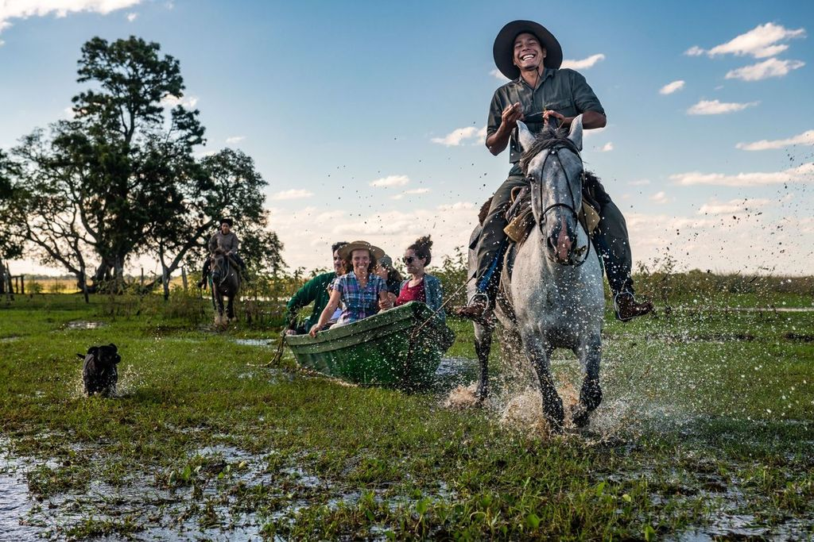
El enfoque provincial propone desarrollar el parque mediante un modelo de desarrollo local basado en producción de naturaleza y revalorización de la cultura local.
Patrimonio jesuítico-guaraní, religiosidad popular, humedales, fauna emblemática, Laguna San Juan, Portal San Antonio y redes de actores.
Integrar conservación, riesgos hídricos, infraestructura urbana y desarrollo local en una sola agenda territorial.
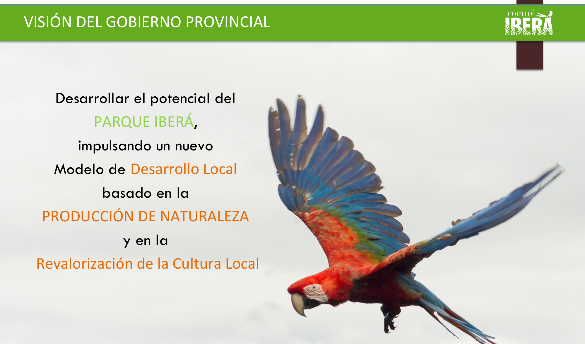
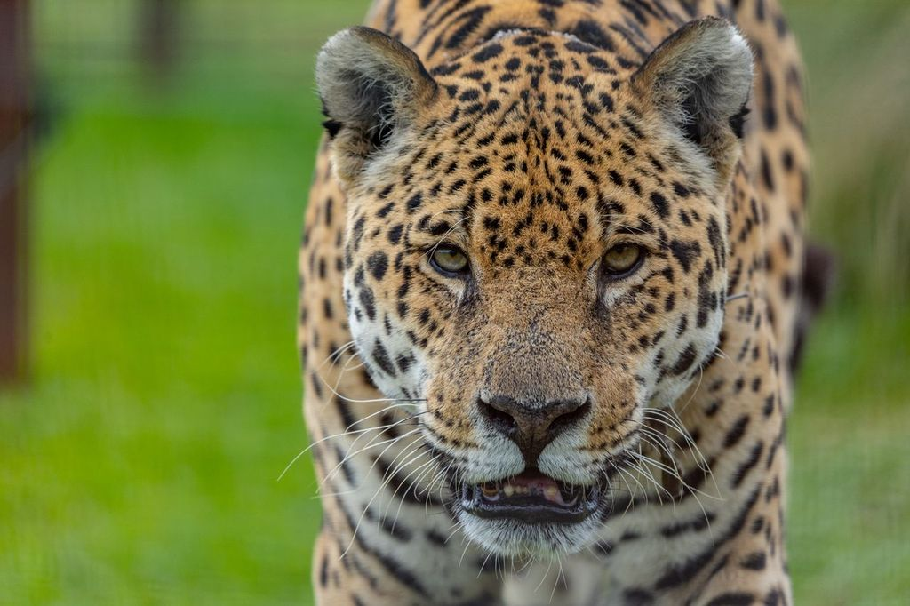
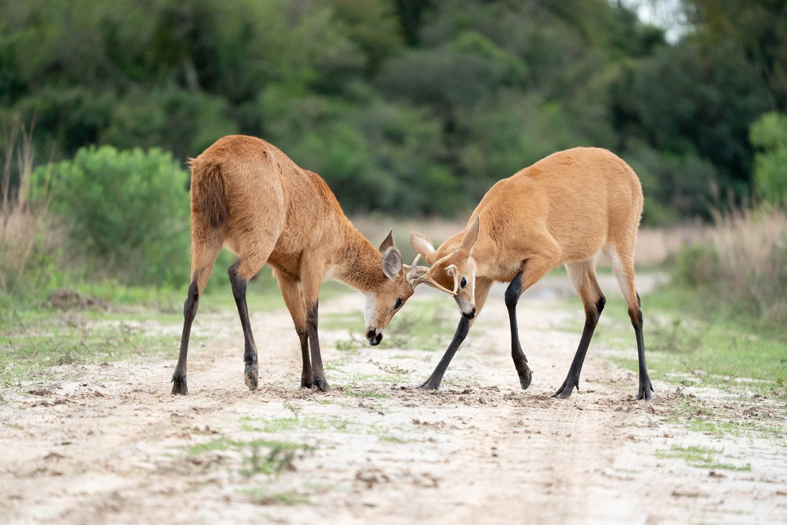
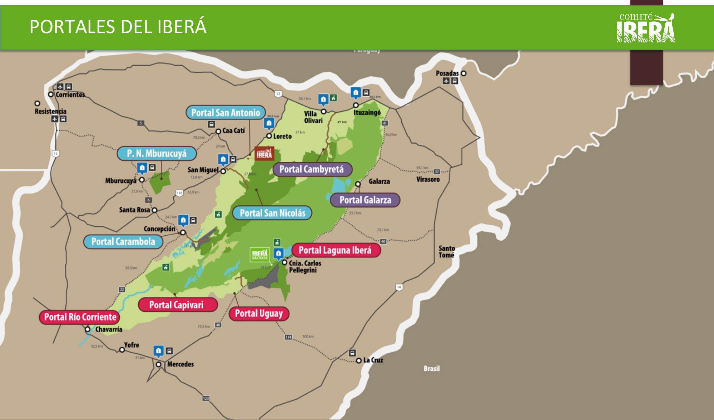
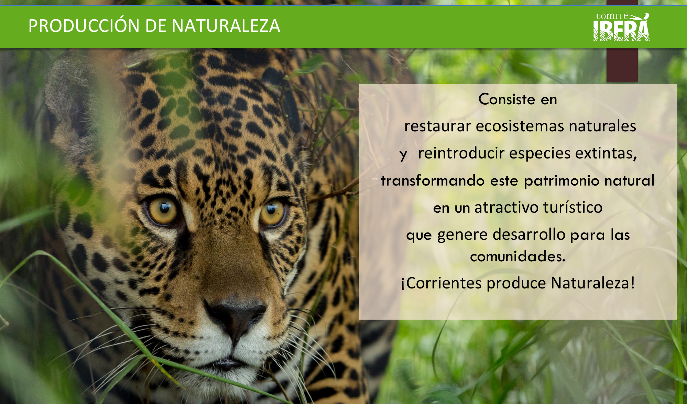
Objetivo general: diseñar un proyecto preliminar de ordenamiento territorial participativo para Loreto que articule conservación de humedales, organización urbano-servicial, gestión de riesgos y desarrollo local en el marco del sistema Iberá.
el sistema territorial: medio físico, población, actividades, asentamiento, relaciones, instituciones y marco legal.
problemas, necesidades, potencialidades y limitaciones con base documental y participación local.
metodología, Gantt, responsables, recursos, factibilidad y productos para iniciar el proceso real de OT.
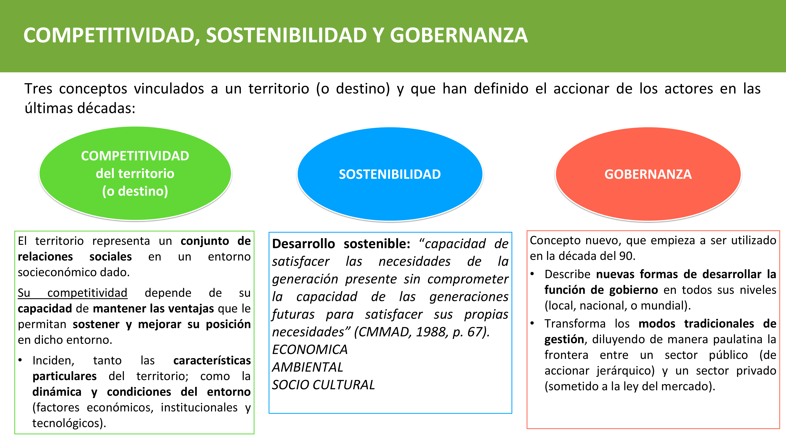
El territorio se entiende como conjunto de relaciones sociales en un entorno socioeconómico y ambiental dado.
Nuevas formas de gestión de lo público que articulan sector estatal, privado, social y del conocimiento.
La competitividad territorial depende menos de “tener recursos” y más de organizarlos con reglas, actores y capacidades.
Pasar del diálogo de saberes al diálogo de haceres: datos, acuerdos y acciones institucionalmente viables.
Hormiga: releva datos, mapas, riesgos y servicios. Araña: teje redes entre municipio, Comité Iberá, UNNE, prestadores y comunidad.
Político · académico · productivo · social.
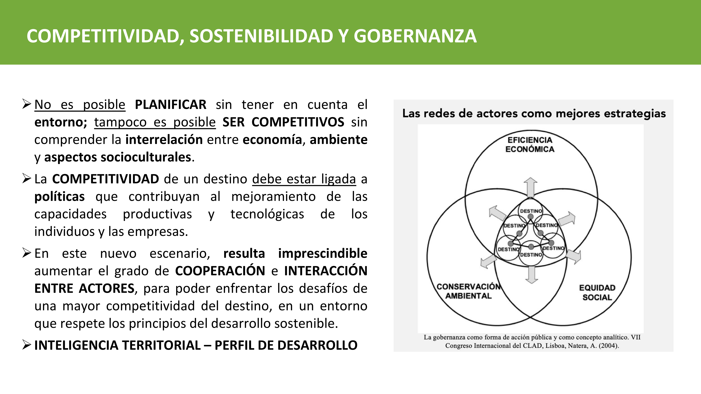
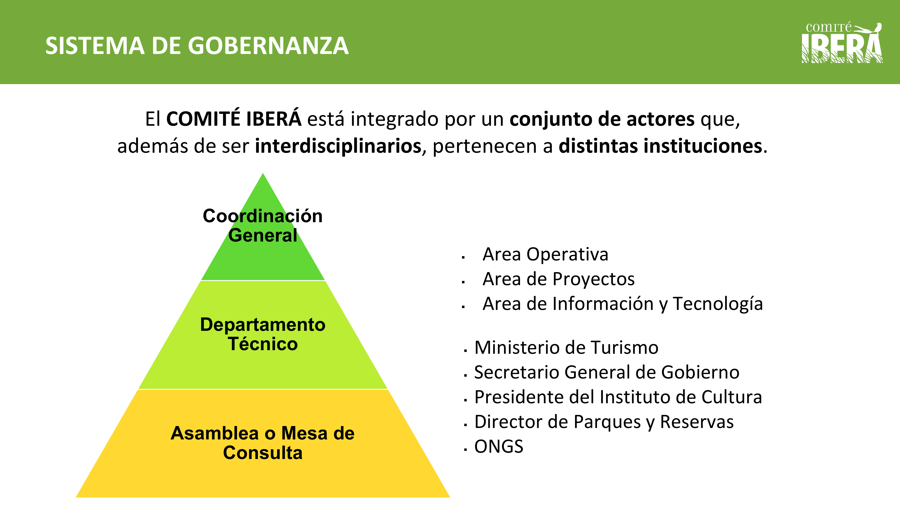
El Comité Iberá aparece como un sistema de gobernanza integrado por actores interdisciplinarios y de distintas instituciones.
Permite que Loreto no dependa sólo de capacidades municipales: suma provincia, universidad, ONGs, prestadores y comunidad.
La articulación institucional reduce el riesgo de que el proyecto quede como diagnóstico aislado.
Humedales, lagunas, áreas inundables, biodiversidad y riesgos hídricos.
Escala local reducida, identidad loretana, capacidades sociales e institucionales.
Ganadería, empleo público, turismo de naturaleza, servicios y economía local.
Casco urbano, periurbano, accesos, ruta, portal y espacios patrimoniales.
Rutas, conectividad digital, vínculos con portales, San Miguel, Caá Catí y Corrientes.
Municipio, Provincia, Comité Iberá, UNNE, Ley 25.675, normativa ambiental y urbana.
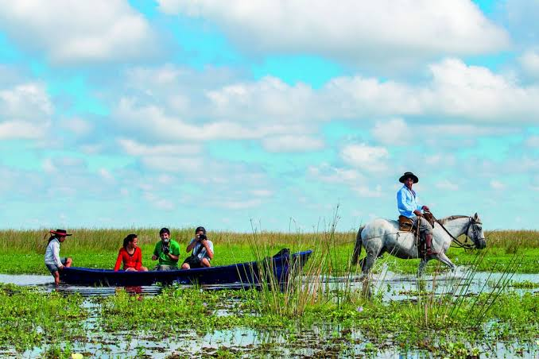
Revisión de antecedentes, mapas, normativa, datos poblacionales, imágenes satelitales y documentos del Iberá.
Entrevistas semiestructuradas, observación directa, inventario territorial, mapeo de actores y cartografía social.
Validación de problemas, vocaciones del territorio, matriz FOAR y priorización de acciones.
Hoja de ruta de OT: agenda de problemas, mapa de actores, cartera inicial de proyectos y condiciones de factibilidad.
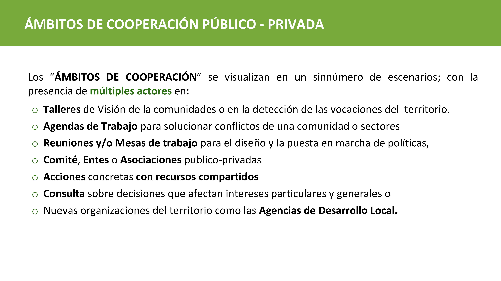
| Actividad | M1 | M2 | M3 | M4 | M5 | M6 | Responsable |
|---|---|---|---|---|---|---|---|
| Fase Hormiga — base técnica y diagnóstico | |||||||
| Revisión documental y cartográfica | Ambos | ||||||
| Diseño de instrumentos y fichas | Juan Pablo | ||||||
| Inventario territorial y entrevistas | Ambos | ||||||
| Fase Araña — articulación y propuesta | |||||||
| Mapeo de actores y talleres | Sebastián | ||||||
| Matriz FOAR y lineamientos | Ambos | ||||||
| Hoja de ruta, factibilidad y validación | Ambos + actores | ||||||
Documentos, mapas, equipo académico, escala local manejable.
100% para formular el proyecto preliminar.
La implementación futura depende de validación municipal y continuidad institucional.
Ordenar Loreto no es imponer una imagen externa de desarrollo. Es construir una agenda situada para decidir en común cómo articular ambiente, comunidad, patrimonio, servicios y economía local.
El Comité Iberá aporta escala, redes y soporte institucional; el proyecto de OT debe traducir esa oportunidad regional en beneficios concretos para el casco urbano y la comunidad loretana.
Datos suficientes, actores sentados, prioridades claras y decisiones territorialmente responsables.